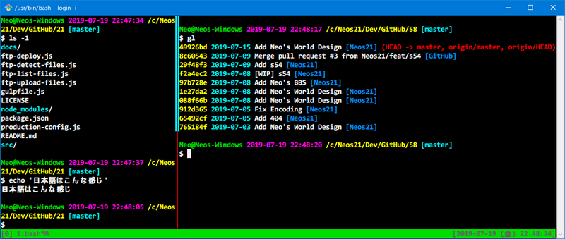

ConEmu と Cmder を使ってみたけど GitBash に戻った
これまで Windows 環境では ConEmu を使って Git For Windows ないしは Git SDK を動かしていた。
しかし、tmux を導入するにあたって不具合が多く、色々と試した結果、「標準の GitBash (git-bash.exe) が最善なんじゃねえの…？」となったので、その軌跡を残しておく。
目次
ConEmu の動作
ConEmu で tmux の表示がバグる
以下の記事で紹介した Task 定義で、ConEmu から GitBash を開いてみた。
set "PATH=C:\git-sdk-64\usr\bin;%PATH%" & "C:\git-sdk-64\git-cmd.exe" --no-cd --command=%ConEmuBaseDirShort%\conemu-msys2-64.exe /usr/bin/bash.exe -l -i -new_console:p%
↑コレ。元はというと以下の記事で書いたように、256色表示とかを上手くやるための conemu-msys2-64.exe (cygwin-connector) を噛ませて bash.exe を起動している。
この状態で tmux を開くと、画面がどんどん上にスクロールしていくかのような描画になり、画面がバグってまともに使えない。
また、tmux を使っていない通常時も日本語 (全角) 文字を入力したり消したりしているとカーソル位置がおかしくなるバグがあり、かなりつらい。
違う Task 定義で動かすと tmux が使えなくなる
続いて、以下のような Task 定義に修正してみた。
set "PATH=C:\git-sdk-64\usr\bin;%PATH%" & cmd /c "C:\git-sdk-64\usr\bin\bash -l -i" -new_console:p
コチラは Windows コマンドの cmd /c コマンドを使い、直接 bash.exe を実行している。
コレでターミナルを起動すると、日本語入力時にカーソル位置がバグる問題は解消するが、tmux を起動しようとすると以下のようなエラーが出てしまう。
$ tmux
open terminal failed: not a terminal
どうも $TERM が xterm-256color ではなく cygwin になっていることが原因っぽいが、環境変数を後から書き換えたりするだけでは使えるようにできなかった。
Cmder
ココで登場したのが Cmder。ConEmu を改良したモノに、Git For Windows を同梱しているというツール。
内部的には ConEmu なのだが、細部が異なっている。例えば、同梱されている cygwin-connector conemu-msys2-64.exe の詳細を見ると、バージョン番号が違う。
- ConEmu 同梱版 : v1.2.0.0
- Cmder 同梱版 : v1.2.5.0
両者でファイルを入れ替えて使ってみたりしたが、正常に起動しなくなるため、Cmder 特有の調整が入っているようだ。
ConEmu で発生する日本語文字の表示が崩れる問題が、Cmder だと発生しなくなる、ということで入れてみた。
cygwin-connector を挟んでいると、tmux は正常に動作するが、日本語入力がバグる
さて、cygwin-connector 入りの Task を Cmder で使ってみる。すると、tmux が正常に動作した。
tmux の罫線が消えたりする問題は、僕がお気に入りで使っている MeiryoKe などの和文フォントではなく、Consolas や Menlo など英文フォントを指定すれば回避できる。
コレはやったか？！と思ったら、日本語入力時のバグり方が ConEmu よりひどい。
- 参考：cmderでカーソル位置が一文字ずれたときの対処法 - Qiita
- 参考：Windows Creaters Update(バージョン1703)でconemuの全角文字のカーソル位置がずれる(解決済) - Qiita
事象は上の記事のスクショを見てもらうと分かりやすいだろう。
コマンドプロンプトの設定で従来のコンソールを使うのチェックを入れると何故かなおる。
というのもやってみたが、直らず。
実は cygwin-connector 自体の GitHub Issues に、CJK 文字に関するバグは挙がっているのだが、対応がされていないようなのだ。
コレまでのどこかのタイミングでは、Windows OS 側と何か上手く都合が付けられるタイミングがあり、不具合が解消できたのかもしれないが、本稿執筆時点では上手く制御できなくなっていた。日本語が壊滅的に使えないのはダメだなぁ…。
cygwin-connector を挟まないとやっぱり tmux が使えない
それでは cmd /c で bash.exe を直起動したらどうかというと、日本語入力はバグらずできるようになるが、代わりに ConEmu 同様 tmux が起動できなくなる。
GitBash
それじゃあ Git SDK に同梱の GitBash (git-bash.exe) の動きも見ておこうか、ということで試してみた。
tmux は難なく起動する。罫線が崩れる件は英文フォントを指定することで回避。
英文フォントにない日本語文字は、フォントリンクというレジストリをイジってやれば、お気に入りなメイリオ改を使わせたりできるのだが、なんだか間延びして表示されていて、実害はないが見た目がダサい。
- 参考：欧文フォントを日本語に対応させる Tipsというかメモ
- 参考：Windowsの欧文フォントを日本語に対応させる – Mohmongar
- 参考：フォントリンクの方法 - Desktop Customize Lab.
見た目のダサさはおいておくと、日本語入力してもカーソル位置がバグったりしないし、tmux も動作する。一番実害が少なく使えるソフトは、GitBash だったのだ…。
3者のまとめ
ということで3者の挙動をまとめる。
| ソフト情報 | 接続方式別の挙動 | ||||
|---|---|---|---|---|---|
| ソフト名 | タブ機能 | 日本語描画 | 接続方式 | 日本語入力 | tmux |
| GitBash | × | △ 汚い (崩れはなし) | - | ○ 正常 | ○ 動作する |
| ConEmu | ○ | ○ 正常 | cygwin-connector 使用 | × バグあり | ○ 動作する |
| cygwin-connector 未使用 | ○ 正常 | × 起動しない | |||
| Cmder | ○ | ○ 正常 | cygwin-connector 使用 | × ひどいバグ | ○ 動作する |
| cygwin-connector 未使用 | ○ 正常 | × 起動しない | |||
「日本語表示」は、いずれの環境も「Consolas」あたりの英字フォントを選択していることが前提。tmux の罫線記号も、日本語フォントを指定していると崩れやすい。この辺、日本語含めてターミナル利用で最適なフォントの決定版を見付けたいところ…。
GitBash はタブ機能がないが、tmux が一番まともに動く。ConEmu や Cmder は本体にタブ機能があり tmux 相当のことができるが、tmux を正常に動かせてかつ日本語入力もまともにできる環境はない。
色々と天秤にかけてみたけど、MacOS の「ターミナル.app」の「タブ機能」をどのくらい使うか考えたところ、結局「ウィンドウ」に分けて使うことの方が多いので、別にソフト側がタブ機能を持たなくても良い気がしてきた。
そもそも GitBash なら本体付属でポータブルだし、ConEmu や Cmder のような別ソフトをさらにいれる手間は省ける。日本語の文字が汚いのが難点だが、Windows VSCode のターミナルだとマシだから、より使用頻度の少ないターミナル本体は GitBash で良いかな、と思うことにした。
.minttyrc を本腰入れて直しておく
つーわけで、tmux を使うために ConEmu と Cmder を捨て、Git SDK に統一することにした。
ついでに .minttyrc をイジって、MacOS ターミナルの「Homebrew」カラーをもう少しドギツくしたカラーリングにしてみた。フォントは Consolas を使うと日本語もまぁまぁ見られる。
# ================================================================================
# .minttyrc
# ================================================================================
Charset = UTF-8
Language = ja
Locale = ja_JP
Columns = 120
Rows = 25
Font = Consolas
FontHeight = 11
FontWeight = 700
FontIsBold = yes
FontSmoothing = full
BoldAsColour = yes
BoldAsFont = yes
AllowBlinking = yes
CursorType = block
OpaqueWhenFocused = yes
Term = xterm-256color
ThemeFile =
ForegroundColour = 240,240,240
BackgroundColour = 0, 0, 0
CursorColour = 240,240,240
Black = 100,100,100
BoldBlack = 100,100,100
Red = 240, 0, 0
BoldRed = 240, 0, 0
Green = 0,220, 0
BoldGreen = 0,220, 0
Yellow = 255,255, 0
BoldYellow = 255,255, 0
Blue = 0,140,255
BoldBlue = 0,140,255
Magenta = 255, 0,240
BoldMagenta = 255, 0,240
Cyan = 0,240,240
BoldCyan = 0,240,240
White = 255,255,255
BoldWhite = 255,255,255

以上！